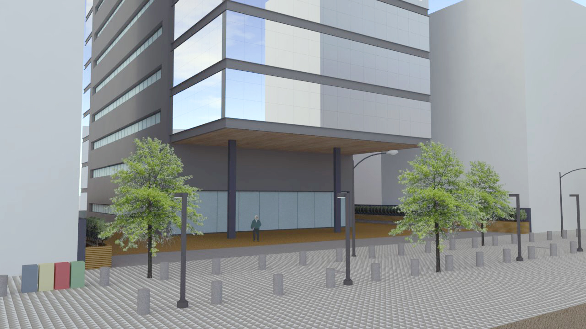
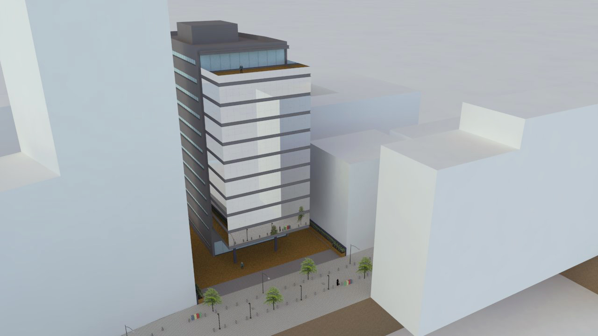
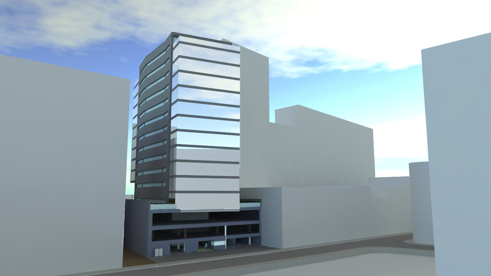
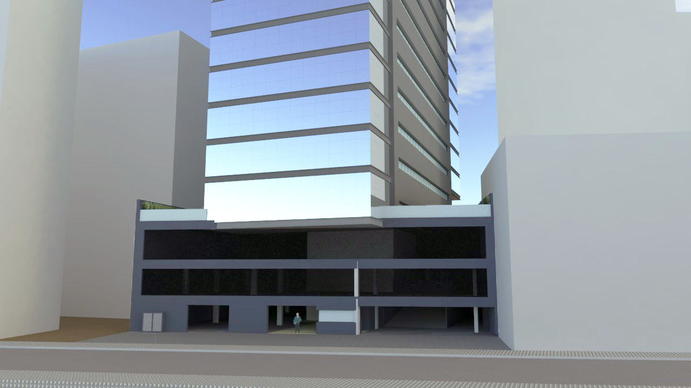
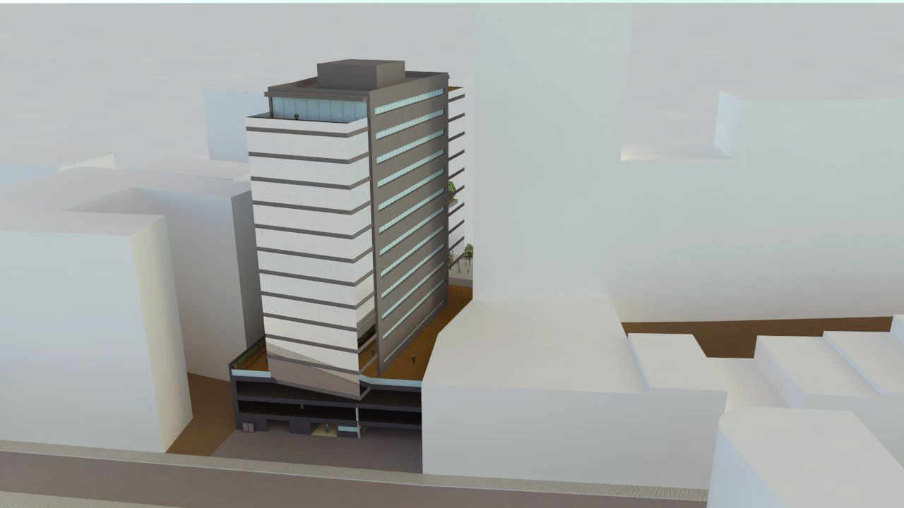

Ateliê de Projetos II - Área Externa
Descrição do Projeto
Este projeto trata-se de um edifício comercial com dez pavimentos que abriga, em oito destes pavimentos, um complexo de Coworking com várias salas individuais e salas de reuniões, um espaço comercial no térreo que conta com um restaurante, servindo de atrativo para o público externo, e, na cobertura, um espaço Café com sala de jogos.
O projeto tem como base a união de dois volumes, tendo suas laterais revestidas por elementos semelhantes a um pórtico, já que estas são voltadas para leste e oeste – orientações com maior insolação. Para o fechamento dos pavimentos foram utilizadas peles de vidro reflexivo, possibilitando uma boa iluminação e ampla visão do entorno da edificação ao mesmo tempo que amenizam a incidência de luz solar no interior do prédio.
O projeto foi modelado no software SketchUp e renderizado com o VRay para SketchUp 2.0.
    Voltar ao portfólio